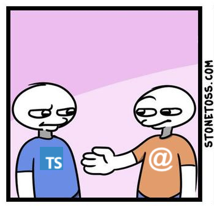
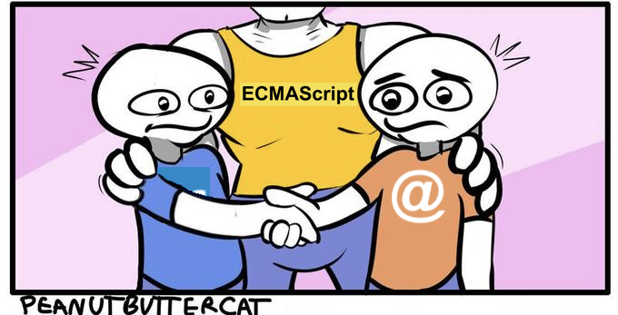

What are these decorators?
Perspective... matters :)




 





function Person(name, surname) { this.name = name; this.surname = surname; }Person.clone = function (other) { if(!(other instanceof Person)) { throw new Error('Not Person!'); } return new Person(other.name, other.surname); }Object.defineProperty(Person.prototype, 'fullName', { get() { return `${this.name} ${this.surname}`; } });Person.prototype.sayHello = function () { alert(`Hi, I'm ${this.fullName}!`); }const person = new Person('Adam', 'Małysz');person.sayHello();
class Person { constructor(name, surname) { this.name = name; this.surname = surname; }static clone(other) { if(!(other instanceof Person)) { throw new Error('Not Person!'); } return new Person(other.name, other.surname); }get fullName() { return `${this.name} ${this.surname}`; }sayHello() { alert(`Hi, I'm ${this.fullName}!`); } }const person = new Person('Adam', 'Małysz');person.sayHello();
--experimentalDecorators
{
"plugins": [
"@babel/plugin-transform-typescript",
["@babel/plugin-proposal-decorators", { "legacy": true }],
["@babel/plugin-proposal-class-properties", { "loose": true }]
]
}
@frozen class Test {}class Test {}Test.prototype.injectedFn = () => alert('injected!'); new Test().injectedFn();
function frozen(constructor: Function) {
Object.freeze(constructor);
Object.freeze(constructor.prototype);
}
Parametrizing?
interface Options { selector: string; }// decorator factory function WebComponent(options: Options) {return function<C extends Function>(constructor: C) { customElements.define(options.selector, constructor); }}
@WebComponent({ selector: 'm3-siema' })class UberComponent extends HTMLElement { connectedCallback() { this.innerHTML = 'siema!'; } }const component = document.createElement('m3-siema'); document.getElementById('thisSlide').prepend(component);
Other decorators
- on methods
- on properties/accessors
- on fields
- on method parameters
- including static
?
type Mappable<T> = T & { mapFromDecorators(): object; }function mappable<C extends Function>(constructor: C) { constructor.prototype.mapFromDecorators = function() {return (constructor as any).fieldsToMap.reduce((result, fieldName: string) => { result[fieldName] = this[fieldName]; return result; }, {});} }
function map(targetPrototype: any, fieldName: string) {
if (!targetPrototype.constructor.fieldsToMap) {
targetPrototype.constructor.fieldsToMap = [];
}
targetPrototype.constructor.fieldsToMap.push(fieldName);
}
@mappable class User { @map private name: string; @map private mail: string; private pass: string; constructor(name: string, pass: string, mail: string) { [this.name, this.pass, this.mail] = [name, pass, mail]; } }const person = ( new User("Adi", "pass", "adi@mail.com") as Mappable<User> ).mapFromDecorators(); console.log(person);
function first() { alert('1st decorator assigned');return function(proto, methodName: string, descriptor: PropertyDescriptor) { alert('1st decorator executed'); }}function second() { alert('2nd decorator assigned'); return function(proto, methodName: string, descriptor: PropertyDescriptor) { alert('2nd decorator executed'); } } function clazz() { alert('class decorator assigned'); return function(constructor: Function) { alert('class decorator executed'); } }
@clazz()
class TestOrder {
@first() @second() method() {
/* ... */
}
}
current stage 2 proposal decorators != decorators we know
@WebComponent('m3-siema')
class UberComponent extends HTMLElement {
connectedCallback() {
this.innerHTML = 'siema!!!';
}
}
decorator @WebComponent(selector) {
@register(clazz => customElements.define(selector, clazz))
}
Building blocks
-
@wrap= method instead of a decorated method/class -
@register= callback after creating a decorated class -
@expose= sharing private data (#) -
@initialize= callback after creating an instance of a decorated class
Is this worth the effort?
-
 - metadata,
- metadata, Reflect -
Informative:
@Override,@Deprecated -
Language features:
@Delegate -
Managing:
@RestController,@Service,@Entity -
Additional method logic:
@Transactional -
Special treatment:
@Test,@Column